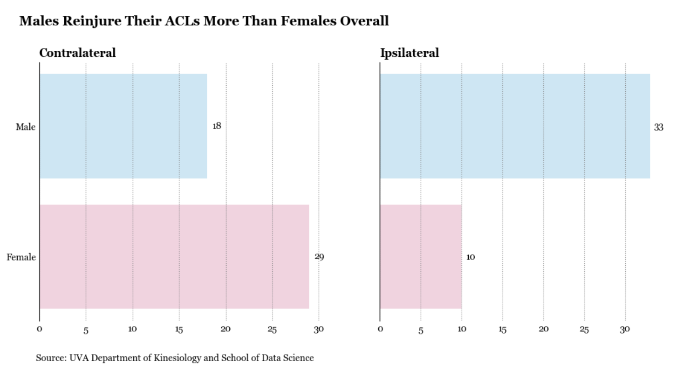
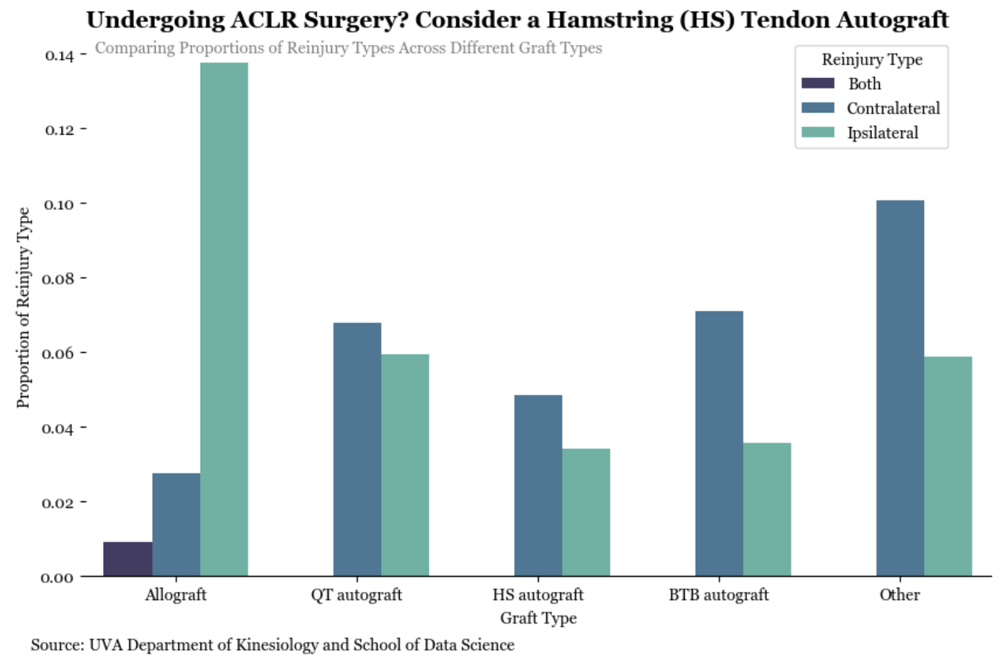
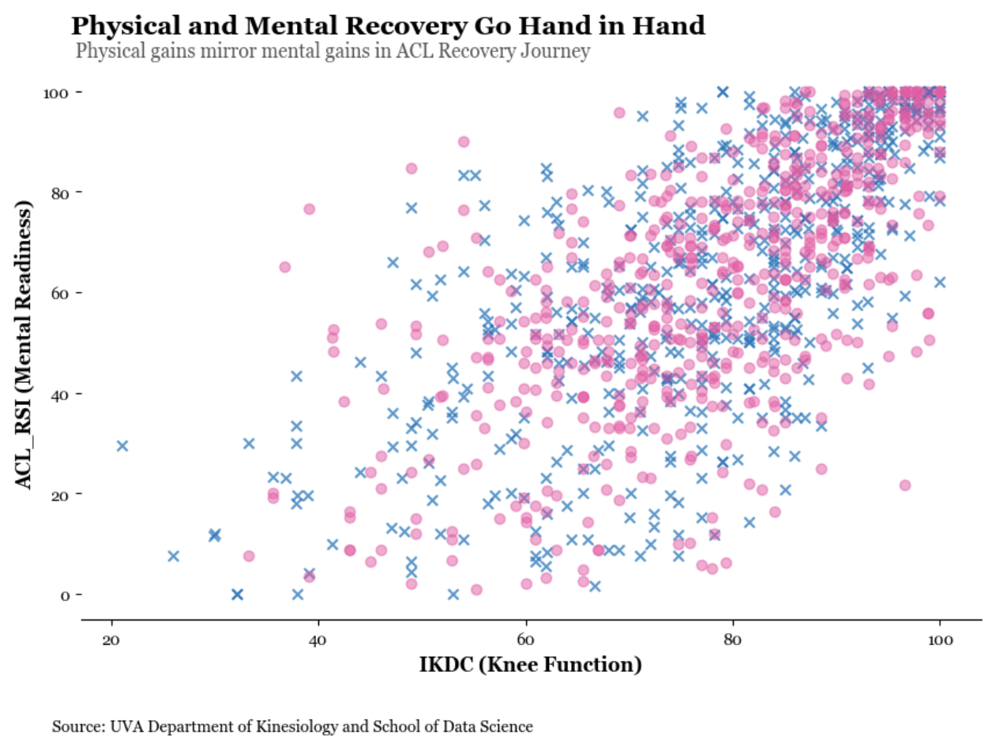

ACLR Final Project
Report
Audience
Our final report’s audience/stakeholders include physicians and other researchers evaluating the health of patients who have undergone ACL reconstruction surgery.
Problem Statement
After athletes tear their anterior cruciate ligament (ACL), many undergo ACL reconstruction (ACLR) surgery. However, physicians and other researchers are still evaluating the recovery and health of patients who have undergone ACLR. It is important to note that a majority of patients do not get reinjured - in this study, 83% had no reinjuries after ACLR surgery. There are many features that can affect reinjury rates after the surgery, such as the gender of the patient, the graft type used, and even their mental readiness. Specifically, our stakeholders are interested in all of these factors and what combination will lead to the lowest reinjury rates in patients after ACLR surgery is performed.
Analysis
Graph 1:

Throughout this simulated study, we found that overall, more males than females have reinjured their ACLs. As shown in this graph, men have a greater count of ipsilateral reinjuries than females, while women have a greater count of contralateral reinjuries than males. This finding is consistent with other research, as according to the National Institute of Health, female athletes were found to be 6 times more likely to suffer a contralateral reinjury than their male counterparts (Paterno et.al, 2). Further, the total count of contralateral reinjuries is greater than ipsilateral reinjuries, 47 and 43, respectively. Ipsilateral refers to the reinjury of the knee on the same side as the previous ACLR, reinjuring the same knee as before. Contralateral refers to the reinjury of the knee on the opposite side of the previous ACLR, reinjuring the other knee. We questioned why this might be the case, so we looked to see what grafts might be causing these reinjuries as well.
Graph 2:

The grafts in ACLR surgery are the ligaments used to replace the injured ACL. Most of the procedures in this case study were autografts, meaning that they were taken from the patient themselves. The grafts used in this study were the HS autograft, which uses the hamstring tendon. The BTB autograft, which uses the patellar tendon. The QT autograft, which uses the quadriceps tendon. An allograft, which uses tendon from a deceased donor to replace the ACL. Other, which uses tendon/tissue from the areas not listed above. Based on graph 2, which illustrates the proportions of graft types relative to their reinjury rates, we recommend undergoing ACLR surgery using the HS autograft, which has the highest proportion of no reinjuries and the average lowest proportion of contralateral and ipsilateral reinjuries. On the other hand, patients who undergo an allograft are much more likely to have ipsilateral reinjuries or even both types of reinjuries.
Graph 3:

In our final analysis, we examined the relationship between psychological readiness and perceived functional outcome by plotting ACL-RSI (psychological readiness) scores against IKDC (knee function) scores. The scatterplot revealed a clear positive correlation, suggesting that athletes who report feeling more psychologically prepared to return to sport (higher ACL-RSI) also tend to report better physical function and recovery (higher IKDC).This finding emphasizes the critical role of mental readiness in recovery outcomes, not just physical healing. Regardless of graft type or reinjury risk, it appears that athletes with stronger psychological confidence may have smoother functional recoveries—a reminder that holistic rehabilitation should integrate mental and emotional well-being alongside physical therapy.
Conclusion
Together, all three graphs demonstrate the nuance behind ACL reinjury and recovery. We found sex-specific risks, with men experiencing more ipsilateral tears and women experiencing more contralateral tears. Our graft analysis illustrated how different grafts may influence the type of reinjury, with each option carrying its own benefits and drawbacks. Lastly, we found that regardless of injury type, players who report higher mental readiness tend to experience better physical recovery. Overall, our findings underscore the importance of a personalized recovery approach—one that considers sex, surgical decisions, and the athlete’s psychological readiness.